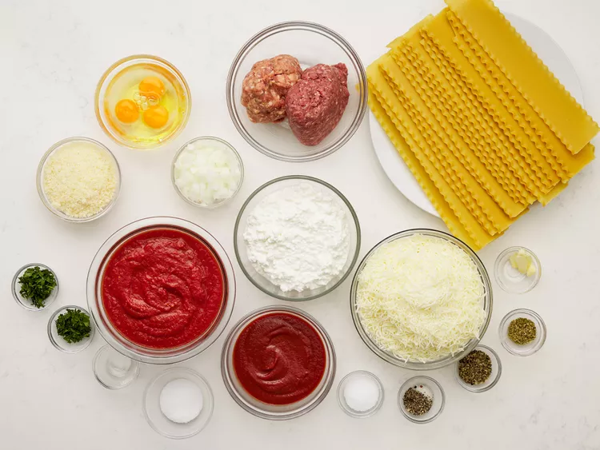

Lasagna Recipe!

This is a reciipe for Homemade Lasagna!
Here's some general information before we begin:
- Prep Time: 1 hr 25 mins
- Cook Time: 1 hr 15 mins
- Servings: 8
- Yield: 1 9x13-inch lasagna
Now lets talk about ingredients!
To start, you're going to need
- 1/2 pound ground pork
- 1/2 pound lean ground beef
- 1/2 cup minced onion
- 1 (28 ounce) can crushed tomatoes
- 1 (8 ounce) can tomato sauce
\
- 2 tablespoons chopped fresh parsley, divided
- 1 clove garlic, crushed
- 1 1/2 teaspoon dried basil
- 1 1/2 teaspoon salt
- 1/2 teaspoon dried oregano
- 1/8 teaspoon white sugar
- 1 (16 ounce) package lasagna noodles
- 1 pound small-curd cottage cheese
- 3/4 cup grated Parmesan cheese
- 3 large eggs
- 2 teaspoons salt
- 1/4 teaspoon ground black pepper
- 1 (16 ounce) package shredded mozzarella cheese
Directions
Step 1
Let's begin prepparations by gathering all of our ingredients!

Step 2
Combine prok and ground beef in a large, deep skillet over medium-high heat;
cook and stir until browned and crumbly, 5 to 7 minutes.
Step 3
Add onion and cook until translucent, about 5 minutes
Return Home